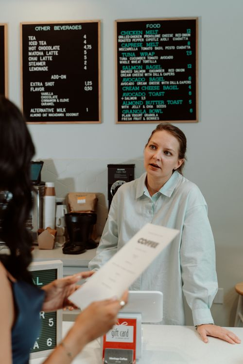

Best Billing Software in Pakistan (2026): 9 Options Compared Honestly
Type "best billing software in Pakistan" into Google and you will find a dozen companies all claiming to be number one. Every demo looks fast, every price looks reasonable, and every salesperson promises that their system is "complete." Then you buy one, install it on your own counter — and discover the things the demo never showed you: it stops working when the internet drops, the khata feature is an afterthought, the monthly fee doubles when you add a second user, or your staff cannot read half the screen because there is no proper Urdu support.
This guide is different. It compares nine real options available to Pakistani shopkeepers in 2026 on the same seven tests — the tests that actually decide whether software survives a busy evening at your counter. And one honest disclosure up front: shopcos soft is our own software. It is in this comparison, judged on the same criteria as everyone else, and where a rival genuinely does something better, this article says so. A comparison that always crowns its own author is not a comparison; it is an advertisement. You deserve better than that before spending your money.
How We Judged: The 7 Tests That Matter
Forget feature lists that run to fifty bullet points. Most of those features you will never touch. These seven questions decide whether billing software works for a Pakistani shop:
- Does it bill without internet? Load shedding and weak signals are everyday realities. Billing must never depend on Wi-Fi.
- Does it handle udhar/khata properly? Credit limits, partial payments, recovery reminders — not just a "customer name" field on the bill.
- What does it really cost over 3 years? Not the first month. The first month is always cheap. The third year is where subscriptions bite.
- Can your staff actually use it? Urdu interface, big buttons, simple flows — or a screen only an accountant could love?
- Does it manage stock and expiry? Automatic stock deduction on every bill, low-stock alerts, and expiry warnings for pharmacies and kiryana stores.
- Is your data yours? Can you export your complete sales and stock history if you ever leave?
- Is there real support? A human on WhatsApp who answers in your language — not a ticket form that replies in three days.
One more honest note: prices and features change. Vendors update pricing pages without telling anyone. Treat every price below as "what was publicly visible in October 2026" and confirm it on the vendor's own site — and, more importantly, in a free trial on your own counter — before paying anything.
The 9 Options at a Glance
- shopcos soft — one-time Rs 40,000, offline-first PC software with mobile sync, full khata, Urdu interface.
- ApnaPOS — local cloud POS, subscription model, actively publishing comparison content for Pakistani retailers.
- ManageKaro — local POS vendor, subscription model, strong presence in exact-match "best POS" searches.
- Mint POS — local cloud POS aimed at retail shops, subscription pricing.
- Sum Cloud POS — cloud-based POS with WhatsApp billing mentions, subscription pricing.
- TezPOS — local POS vendor, subscription model, retail-focused.
- Tillo Retail — one of the rare one-time pricing options in the local market (around Rs 10,000 once, as advertised).
- BazaarMint — local POS vendor with city-focused pages, subscription model.
- Vyapar — popular Indian billing app, widely known in Pakistan — but built around Indian GST, which does not match Pakistani tax and currency needs.
Also on the market, worth a mention even though they are not full billing systems: mobile-only khata apps like Easy Khata and Udhaar Book. They are excellent digital ledgers, but they are not billing software — they will not print a bill, scan a barcode, or deduct stock. If your shop has outgrown a phone ledger, that distinction matters, and our udhar management guide explains where a ledger ends and a billing system begins.

The 9 Options, One by One
1. shopcos soft — Best for shops that want to pay once and own it
shopcos soft is a PC billing system built for Pakistani shops: barcode billing in seconds, automatic stock deduction, digital khata with credit limits, per-cashier logins, expiry alerts, and a full Urdu interface. Its defining choice is offline-first — billing works with no internet at all, and sales sync online when the connection returns. The price is Rs 40,000 once, a lifetime license, with a 30-day free trial and no card required. The honest weakness: it is a PC-first system, so a shop with no computer of its own will need one, and multi-branch owners should test the sync setup during the trial rather than assuming it. Best for: kiryana stores, pharmacies, garment shops, and general stores that want one payment, not a forever bill.
2. ApnaPOS — Best for shops that want a pure cloud system
ApnaPOS is one of the most visible local cloud POS vendors, and its blog content shows it is fighting hard for the "best POS in Pakistan" search. As a cloud system, its strength is access from anywhere — check sales from home, manage from a browser. Its weakness is the same as every pure cloud system: billing quality follows your internet quality. If your shop's connection is rock-solid, that trade may be fine. If it is not, run the Wi-Fi-off test from our offline vs online guide before committing. Pricing is subscription-based; confirm the current monthly rate and what counts as an extra user before you sign.
3. ManageKaro — Best for shops comparing feature-rich cloud POS
ManageKaro is another aggressive local contender in the same cloud POS space, with a broad feature pitch for retailers. Like ApnaPOS, judge it on the seven tests above rather than the feature list: does billing survive an outage, does khata handle partial payments and recovery, and what does the second and third year cost? Its honest drawback is shared by all subscription systems — stop paying and you typically lose access to the system (and sometimes to your own history). Get the data-export answer in writing.
4. Mint POS — Best for small retailers starting with cloud POS
Mint POS targets retail shops with a straightforward cloud POS offering. For a small shop with good internet and a single counter, it is a reasonable shortlist candidate. The questions to ask are the same ones that apply to every subscription system: total monthly cost including users and branches, offline behaviour during an outage, and whether Urdu support is real or a translated label on an English screen.
5. Sum Cloud POS — Best for shops that want WhatsApp bills
Sum Cloud POS is among the vendors whose product pages highlight WhatsApp bill sharing — a genuinely useful feature in Pakistan, where customers expect a bill on their phone. If WhatsApp billing is high on your list, put it on the trial shortlist and test the actual flow: does the bill go out automatically after payment, or does your cashier have to do extra steps for every customer? Extra steps at the counter are where good features go to die.
6. TezPOS — Best for shops that want a simple local POS
TezPOS pitches itself to local retailers as a fast, simple POS. Simplicity is a real virtue — the best system is the one your staff actually uses — but simplicity must not mean missing khata, missing stock deduction, or missing data export. Test those three specifically. A system that bills beautifully but cannot tell you who owes you money is half a system.
7. Tillo Retail — Best budget one-time option to check
Tillo stands out for the same reason shopcos does: it advertises a one-time price (around Rs 10,000) instead of a monthly subscription. That alone makes it worth a trial if your budget is tight. The honest question is scope: at that price point, verify carefully what is included — khata depth, stock management, expiry alerts, support quality, and whether updates are included or charged later. A cheap one-time price that needs replacing in a year is not cheaper than a good one.
8. BazaarMint — Best for shops that like a local vendor with city presence
BazaarMint is a local vendor with city-focused pages, suggesting it is building its presence shop by shop in different cities. Local presence can mean better on-the-ground support — a real advantage when something breaks on a Saturday evening. The same subscription questions apply: monthly cost over three years, offline behaviour, and data export. Ask for a reference: one shop in your city, using it for more than six months, that you can call.
9. Vyapar — Popular, but the wrong tax system for Pakistan
Vyapar deserves an honest paragraph because many Pakistani shopkeepers have tried it — it is well-made, widely reviewed, and genuinely good software. The problem is not quality; it is fit. Vyapar is built for India: Indian GST formats, Indian tax workflows, and an ecosystem around Indian compliance. A Pakistani shop does not file GST, prices in rupees with Pakistani tax realities, and needs khata in the local sense of the word. Using an Indian GST-centred system in a Pakistani shop means working around the software every day instead of the software working for you. If you tried Vyapar and felt that friction, that is why — and it is a strong reason to pick a Pakistan-built system instead.
The 3-Year Cost Math Nobody Shows You
This is the single most important table in this article. Most local vendors charge monthly subscriptions in the range of roughly Rs 500 to Rs 6,999 per month that we observed across pricing pages. Watch what happens over three years:
- Rs 1,000/month subscription: Rs 36,000 over 3 years — and still going, forever, with access ending if you stop.
- Rs 3,000/month subscription: Rs 108,000 over 3 years. That is nearly three times a one-time license, and year four costs the same again.
- Rs 5,000/month subscription: Rs 180,000 over 3 years — before extra users, extra branches, or "premium" features.
- shopcos soft, Rs 40,000 once: Rs 40,000 over 3 years. Year four: Rs 0. The software keeps working.
- Tillo-style one-time, ~Rs 10,000 once: Rs 10,000 over 3 years — cheapest on paper, so verify scope carefully (see above).
The rule: never compare first-month prices. Compare the 3-year total, including every user, branch, and feature you will actually need. Then ask what happens to your data if you stop paying. Those two answers separate the genuinely cheap options from the ones that only look cheap.
Our honest POS price guide breaks this down further in rupees, including hardware costs and the hidden fees that subscriptions quietly add.
Which One Should Your Shop Pick?
If you run a kiryana or general store
You need loose-item billing, fast barcode scanning, khata with credit limits, and offline reliability during load shedding. Shortlist shopcos soft first, then test one subscription cloud option against it on your own counter. The offline test alone usually settles it.
If you run a pharmacy or medical store
Batch numbers, generic-name search, and expiry alerts are non-negotiable — a system without them will cost you expired stock every month. Check any shortlist candidate for all three, and read our pharmacy software notes in the POS buyer's guide before deciding.
If you run a garment or fashion shop
You need variants (size, colour), fast billing during sale season, and staff logins so you know who billed what. Cloud access matters less here than counter speed and staff control.
If you run multiple branches
Remote visibility becomes genuinely valuable — this is where cloud systems earn their subscription. But keep billing local at each branch: the hybrid setup (offline billing + online sync) gives you the dashboard without the rush-hour risk. Test multi-branch sync in the trial, not after purchase.
If your budget is very tight
Start with the honest budget options: a one-time system like Tillo if its scope covers your needs, or shopcos soft's 30-day free trial to prove the value before paying anything. Avoid "free" software that has no support and no updates — our upcoming guide on what "free" really costs will explain why free billing software is usually the most expensive kind.
Red Flags: Walk Away If You See These
- No free trial on your own counter. A demo video is not a trial. If a vendor will not let you test on your real products, with your real staff, they are hiding something.
- No clear answer on data export. "You can export" is not an answer. Ask: complete sales, stock, and khata history, in a readable format, without paying extra. Hesitation is your answer.
- Offline mode that is actually a queue. If billing works offline but khata balances and stock lookups vanish until you reconnect, that is not offline software.
- Prices that only exist after a sales call. Honest vendors publish prices. Hidden prices mean the price depends on how much they think you will pay.
- An Indian GST system sold as "works for Pakistan." It does not. Tax formats, currency handling, and khata workflows are local, and workarounds cost you daily.
- Fake reviews or fake "customer" testimonials. If a vendor's reviews all sound the same and none name a real shop, trust the trial, not the testimonials.
The 10-Minute Trial Test (Run It on Every Finalist)
- Turn the Wi-Fi off. Bill five products, record one udhar sale, print the bill. Everything should work.
- With Wi-Fi still off, check yesterday's sales and a customer's udhar balance. If either is missing, the offline claim is thin.
- Turn Wi-Fi back on and watch the data sync by itself — no exporting files, no sync button.
- Bill a loose item (by weight or by piece) and a product with a variant (size or colour).
- Ask, in writing: "If I stop paying tomorrow, can I take my complete data with me?" Keep the reply.
- Do the 3-year cost math for your actual number of users and branches.
The system that passes all six is the system you can build a shop on. Most finalists fail at least one — and the one they fail tells you exactly what your next three years will feel like.
The Honest Verdict
There is no single "best" billing software in Pakistan, because shops are not identical. A cloud POS is a reasonable choice for a multi-branch retailer with excellent internet. A budget one-time system is a reasonable choice for a tiny shop with simple needs. And a mobile khata app is a reasonable choice if all you need is a ledger.
But for the typical Pakistani shop — one branch, real customers at a real counter, internet that is good but not guaranteed, and udhar as a daily reality — the best combination is offline-first billing, proper khata, Urdu your staff can read, and a one-time price that stops costing you money after day one. That is exactly what shopcos soft was built to be, and the 30-day free trial exists so you can prove it on your own counter before spending a rupee. Run the trial test above on us too. If we fail it, do not buy us — buy whoever passes it.
Photo credits: Cashier processing sales at a shop counter photo by Andrea Piacquadio · Cashier serving a customer at a counter photo by RDNE Stock project · Young shopkeeper at a market stall photo by Muhammad-Taha Ibrahim · Grocery seller holding fresh produce photo by Kampus Production — all via Pexels.
Compare us yourself — free for 30 days.
shopcos soft: Rs 40,000 one-time (lifetime license), barcode billing in seconds, automatic stock deduction, digital khata with credit limits, per-cashier logins, 100% offline billing with online sync, full Urdu interface — and WhatsApp support in your language.
Start 30-day Free TrialQuestions? WhatsApp us: 0326 4025618